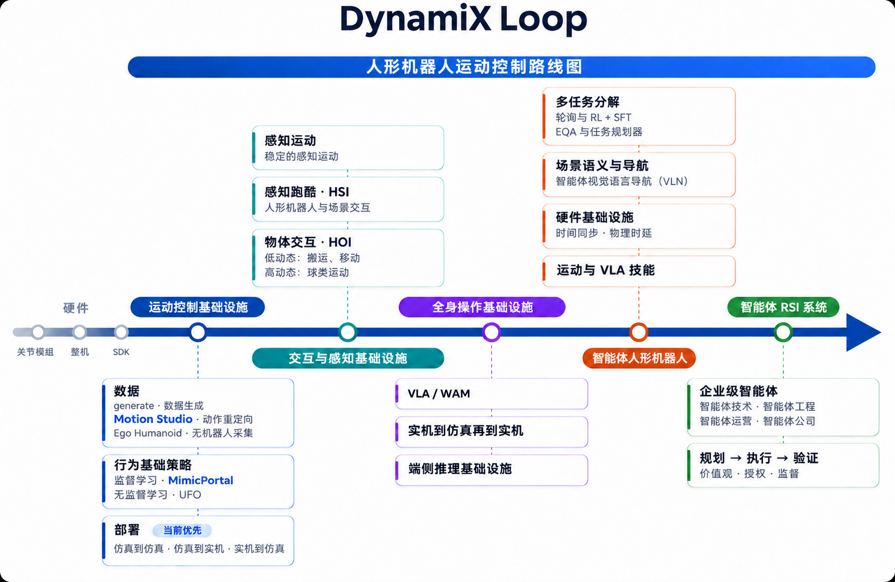

人形机器人 · Lumo
关于 DynamiX Loop
DynamiX Loop 为 Lumo 构建人形机器人控制技术栈，涵盖运动数据、基于物理的运动控制、可复用技能与任务智能。
能力路线图
路线图
近期重点：搭建部署基础设施，支持仿真到仿真（sim-to-sim）、仿真到实机（sim-to-real）和实机到仿真（real-to-sim）。路线图展示各项能力之间的递进关系，不设固定日期。


系统架构
控制层级
System 0 负责执行运动，并为 System 1 提供输出；System 1 则将这些能力转化为可复用、可组合的技能。System 2 可利用这些技能进行规划和重规划。在 System 1 尚待补齐的阶段，System 2 可以直接调用 System 0；共享基础设施贯穿各层，连接数据、仿真、部署与实机反馈。